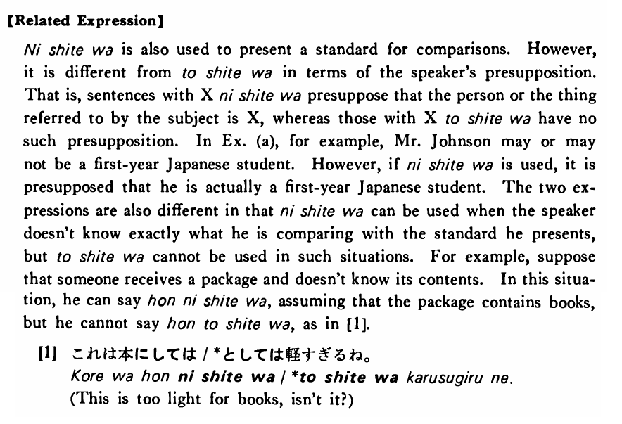

としては (B. 502)
- (ks).
- このステーキは日本のステーキとしては安い・安いです。
- This steak is inexpensive for Japanese steak.
- (a).
- ジョンソンさんは日本語の一年生としては日本語が上手だ。
- Mr. Johnson is good at Japanese for a first-year student (of Japanese).
- (b).
- これは日本のアパートとしては大きい方です。
- For a Japanese apartment, this is one of the bigger ones.
